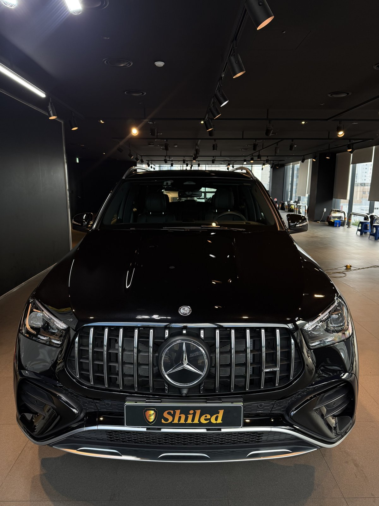
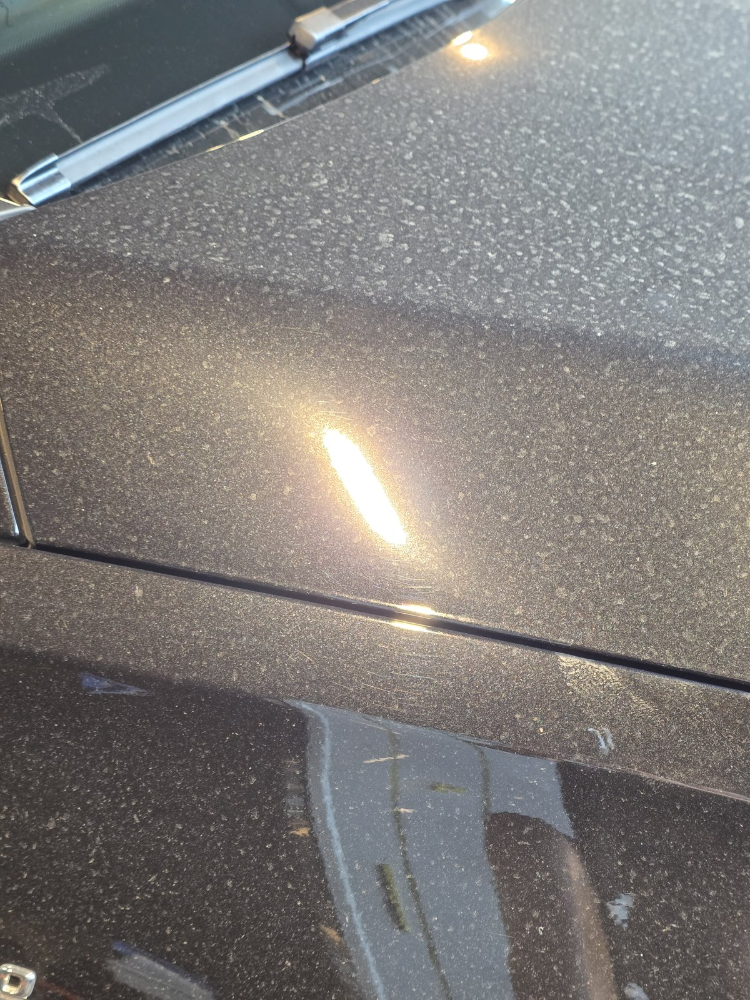
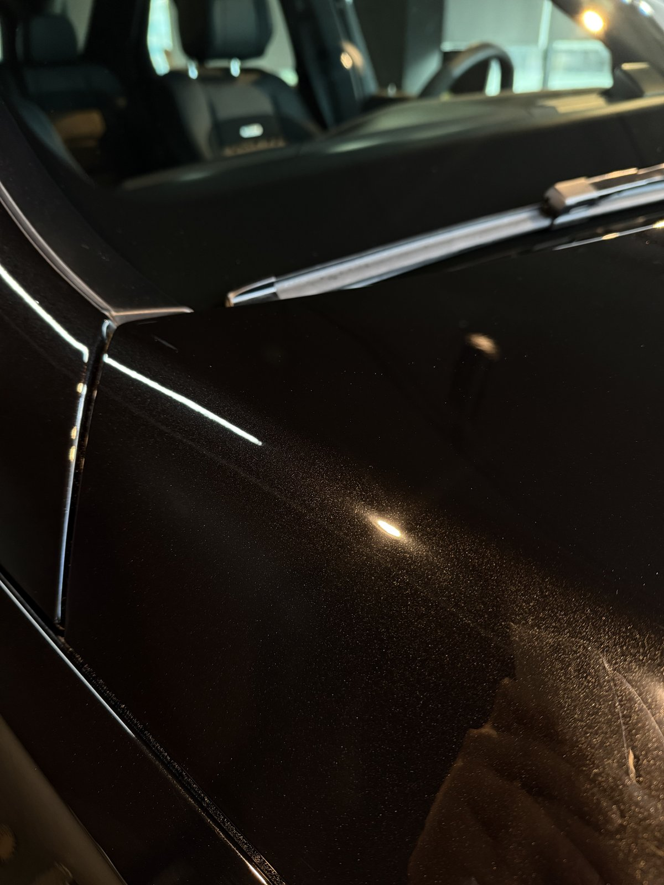
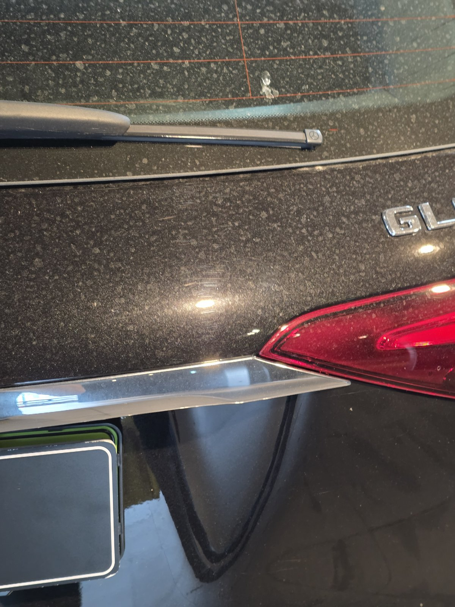
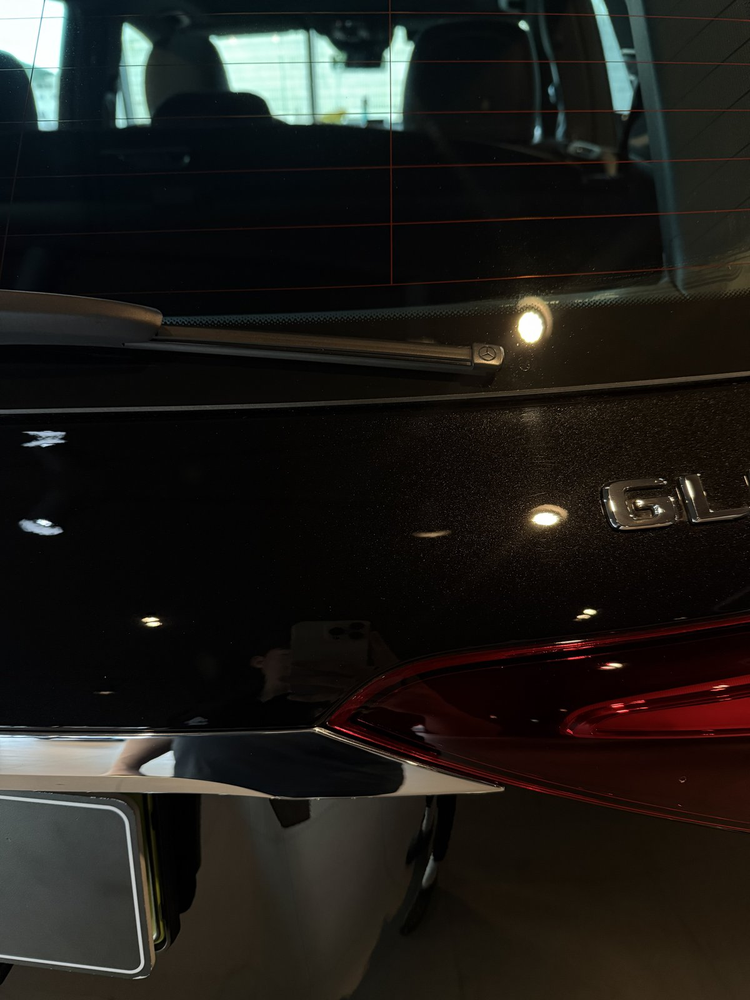
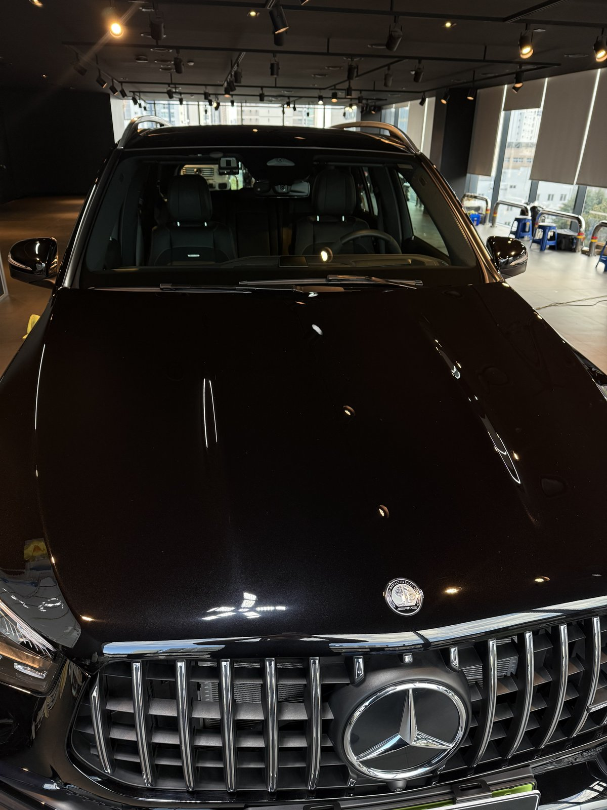

벤츠 GLE 53 AMG 검정입니다. 부산 쉴드광택에 광택 의뢰로 들어왔습니다.
매장 조명 아래 세워두고 보니 도장면 곳곳에 가는 실선들이 겹쳐 있었습니다.

A필러 옆, 자주 만지는 자리부터 스월이 쌓입니다
운전석 A필러 옆 유리 모서리를 조명 아래서 짚어보니, 한 방향이 아니라 여러 각도로 얽힌 세선이 겹쳐 있었습니다.
와이퍼 옆, 문을 여닫을 때 손이 스치는 자리라 세차를 거듭할수록 먼저 스월이 앉는 구간입니다. 관리를 안 하셔서가 아니라, 자주 손이 가는 자리일수록 먼저 닳는다는 뜻입니다.

광택 전. A필러 옆 유리 모서리, 조명이 여러 갈래로 흩어져 맺힙니다

같은 자리, 광택 후. 조명이 갈라지지 않고 한 줄로 곧게 맺힙니다
부산 광택, 어떻게 진행하나
먼저 디테일링 세차와 철분 제거로 표면 오염을 걷어내고 탈지까지 끝냅니다.
그다음이 본론입니다. GLE는 후드·트렁크 면적이 넓어 패널마다 스월 깊이가 다르게 잡힙니다. 굵은 콤파운드로 깊게 박힌 자국부터 정리하고, 단계를 낮춰가며 미세 스월까지 걷어낸 뒤 마감 광택으로 반사율을 끌어올립니다. 한 가지 레시피로 전체를 밀어붙이지 않고, 구간별로 손상 정도를 봐가며 잡았습니다.
기술자의 팁
광택은 도장면을 물리적으로 깎아내는 작업이라 무리하게 여러 번 반복할수록 클리어코트가 얇아집니다. 손상 정도를 먼저 진단하고 필요한 만큼만 잡는 게 16년 경력이 하는 일입니다.
트렁크 배지 옆도 같은 방식으로
트렁크를 여닫을 때 손이 자주 닿는 배지 옆쪽도 같은 세선형 스월이 나타나는 자리입니다.
광택 전에는 조명이 배지 주변에서 흐릿하게 번져 보였는데, 광택 후에는 배지 각인 라인과 테일램프 반사가 또렷하게 갈라져 보입니다.


같은 트렁크 배지 옆, 광택 전후 비교
마감 후, 무엇이 달라졌나
AMG 그릴 위로 매장 조명이 곧게 이어지고, 후드의 굴곡을 따라 반사선이 끊김 없이 흐릅니다.
같은 검정인데도 도장면이 한층 깊어 보입니다. 잔기스가 사라지니 빛이 산란하지 않고 한 방향으로 곧게 맺히기 때문입니다.

자주 묻는 질문
Q. A필러나 트렁크 배지 옆은 왜 유독 스월이 잘 남나요?
A. 손이 자주 닿고 수건으로 자주 닦는 자리이기 때문입니다. 여닫을 때마다 손이 스치는 구간은 세차 횟수가 쌓일수록 미세한 실선형 스월이 먼저 자리 잡습니다.
Q. 검정차는 왜 유독 잔기스가 잘 보이나요?
A. 검정은 명암 대비가 커서 도장면의 미세한 굴곡을 그대로 드러냅니다. 세차 과정에서 쌓인 미세 스월마크가 흰색·은색 차량보다 훨씬 도드라져 보입니다.
Q. 광택과 유리막코팅은 뭐가 다른가요?
A. 광택은 도장면에 이미 생긴 잔기스와 스월을 물리적으로 갈아내 표면을 되살리는 작업입니다. 유리막코팅은 그렇게 정리된 표면 위에 보호막을 올려 앞으로 생길 손상을 막는 작업입니다. 순서상 광택이 먼저, 코팅은 그 다음입니다.
Q. 쉴드광택 위치와 예약은 어떻게 하나요?
A. 부산 남구 유엔로220 1F 쉴드광택입니다. 예약·상담은 010-3384-1850, 대표 최한중이 직접 상담하고 책임 시공합니다.
손이 자주 닿는 자리일수록 먼저 상합니다. 원래 색감은 그 아래 그대로 있습니다.
제품을 직접 만드는 사람이 직접 광택 작업합니다.
부산에서 벤츠 광택을 고민 중이시면 편하게 연락 주십시오.
어떤 차를 타냐보다 어떻게 타냐가 중요합니다~!
시공 중에는 전화를 받지 못할 때가 많습니다.
카카오톡으로 차종과 원하시는 시공을 남겨주시면 확인 후 답변드립니다.
쉴드광택 · 부산 남구 유엔로220 1F · 대표 최한중